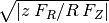

galpy contains a large variety of potentials in galpy.potential that can be used for orbit integration, the calculation of action-angle coordinates, as part of steady-state distribution functions, and to study the properties of gravitational potentials. This section introduces some of these features.
Various 3D and 2D potentials are contained in galpy, list in the API page. Another way to list the latest overview of potentials included with galpy is to run
>>> import galpy.potential
>>> print [p for p in dir(galpy.potential) if 'Potential' in p]
['CosmphiDiskPotential',
'DehnenBarPotential',
'DoubleExponentialDiskPotential',
'EllipticalDiskPotential',
'FlattenedPowerPotential',
'HernquistPotential',
....]
(list cut here for brevity). Section Rotation curves explains how to initialize potentials and how to display the rotation curve of single Potential instances or of combinations of such instances. Similarly, we can evaluate a Potential instance
>>> from galpy.potential import MiyamotoNagaiPotential
>>> mp= MiyamotoNagaiPotential(a=0.5,b=0.0375,normalize=1.)
>>> mp(1.,0.)
-1.2889062500000001
Most member functions of Potential instances have corresponding functions in the galpy.potential module that allow them to be evaluated for lists of multiple Potential instances. galpy.potential.MWPotential is such a list of three Potential instances
>>> from galpy.potential import MWPotential
>>> print MWPotential
[<galpy.potential_src.MiyamotoNagaiPotential.MiyamotoNagaiPotential instance at 0x1078d5c20>, <galpy.potential_src.TwoPowerSphericalPotential.NFWPotential instance at 0x1078d5c68>, <galpy.potential_src.TwoPowerSphericalPotential.HernquistPotential instance at 0x1078d5cb0>]
and we can evaluate the potential by using the evaluatePotentials function
>>> from galpy.potential import evaluatePotentials
>>> evaluatePotentials(1.,0.,MWPotential)
-4.5525780402192924
We can plot the potential of axisymmetric potentials (or of non-axisymmetric potentials at phi=0) using the plot member function
>>> mp.plot()
which produces the following plot

Similarly, we can plot combinations of Potentials using plotPotentials, e.g.,
>>> plotPotentials(MWPotential)

These functions have arguments that can provide custom R and z ranges for the plot, the number of grid points, the number of contours, and many other parameters determining the appearance of these figures.
galpy also allows the forces corresponding to a gravitational potential to be calculated. Again for the Miyamoto-Nagai Potential instance from above
>>> mp.Rforce(1.,0.)
-1.0
This value of -1.0 is due to the normalization of the potential such that the circular velocity is 1. at R=1. Similarly, the vertical force is zero in the mid-plane
>>> mp.zforce(1.,0.)
-0.0
but not further from the mid-plane
>>> mp.zforce(1.,0.125)
-0.53488743705310848
As explained in Units in galpy, these forces are in standard galpy units, and we can convert them to physical units using methods in the galpy.util.bovy_conversion module. For example, assuming a physical circular velocity of 220 km/s at R=8 kpc
>>> from galpy.util import bovy_conversion
>>> mp.zforce(1.,0.125)*bovy_conversion.force_in_kmsMyr(220.,8.)
-3.3095671288657584 #km/s/Myr
>>> mp.zforce(1.,0.125)*bovy_conversion.force_in_2piGmsolpc2(220.,8.)
-119.72021771473301 #2 \pi G Msol / pc^2
Again, there are functions in galpy.potential that allow for the evaluation of the forces for lists of Potential instances, such that
>>> from galpy.potential import evaluateRforces
>>> evaluateRforces(1.,0.,MWPotential)
-1.0
>>> from galpy.potential import evaluatezforces
>>> evaluatezforces(1.,0.125,MWPotential)*bovy_conversion.force_in_2piGmsolpc2(220.,8.)
>>> -82.898379883714099 #2 \pi G Msol / pc^2
We can evaluate the flattening of the potential as  for a Potential instance as well as for a list of such instances
>>> mp.flattening(1.,0.125)
0.4549542914935209
>>> from galpy.potential import flattening
>>> flattening(MWPotential,1.,0.125)
0.5593251065691105
galpy can also calculate the densities corresponding to gravitational potentials. For many potentials, the densities are explicitly implemented, but if they are not, the density is calculated using the Poisson equation (second derivatives of the potential have to be implemented for this). For example, for the Miyamoto-Nagai potential, the density is explicitly implemented
>>> mp.dens(1.,0.)
1.1145444383277576
and we can also calculate this using the Poisson equation
>>> mp.dens(1.,0.,forcepoisson=True)
1.1145444383277574
which are the same to machine precision
>>> mp.dens(1.,0.,forcepoisson=True)-mp.dens(1.,0.)
-2.2204460492503131e-16
Similarly, all of the potentials in galpy.potential.MWPotential have explicitly-implemented densities, so we can do
>>> from galpy.potential import evaluateDensities
>>> evaluateDensities(1.,0.,MWPotential)
0.71812049194200644
In physical coordinates, this becomes
>>> evaluateDensities(1.,0.,MWPotential)*bovy_conversion.dens_in_msolpc3(220.,8.)
0.1262386383150029 #Msol / pc^3
We can also plot densities
>>> from galpy.potential import plotDensities
>>> plotDensities(MWPotential,rmin=0.1,zmax=0.25,zmin=-0.25,nrs=101,nzs=101)
which gives

Another example of this is for an exponential disk potential
>>> from galpy.potential import DoubleExponentialDiskPotential
>>> dp= DoubleExponentialDiskPotential(hr=1./4.,hz=1./20.,normalize=1.)
The density computed using the Poisson equation now requires multiple numerical integrations, so the agreement between the analytical density and that computed using the Poisson equation is slightly less good, but still better than a percent
>>> (dp.dens(1.,0.,forcepoisson=True)-dp.dens(1.,0.))/dp.dens(1.,0.)
0.0032522956769123019
The density is
>>> dp.plotDensity(rmin=0.1,zmax=0.25,zmin=-0.25,nrs=101,nzs=101)

and the potential is
>>> dp.plot(rmin=0.1,zmin=-0.25,zmax=0.25)

Clearly, the potential is much less flattened than the density.
We can also compute the properties of close-to-circular orbits. First of all, we can calculate the circular velocity and its derivative
>>> mp.vcirc(1.)
1.0
>>> mp.dvcircdR(1.)
-0.163777427566978
or, for lists of Potential instances
>>> from galpy.potential import vcirc
>>> vcirc(MWPotential,1.)
1.0
>>> from galpy.potential import dvcircdR
>>> dvcircdR(MWPotential,1.)
0.012084123754590059
We can also calculate the various frequencies for close-to-circular orbits. For example, the rotational frequency
>>> mp.omegac(0.8)
1.2784598203204887
>>> from galpy.potential import omegac
>>> omegac(MWPotential,0.8)
1.2389547535552212
and the epicycle frequency
>>> mp.epifreq(0.8)
1.7774973530267848
>>> from galpy.potential import epifreq
>>> epifreq(MWPotential,0.8)
1.8144833328444094
as well as the vertical frequency
>>> mp.verticalfreq(1.0)
3.7859388972001828
>>> from galpy.potential import verticalfreq
>>> verticalfreq(MWPotential,1.)
3.0000000000000004
For close-to-circular orbits, we can also compute the radii of the Lindblad resonances. For example, for a frequency similar to that of the Milky Way’s bar
>>> mp.lindbladR(5./3.,m='corotation') #args are pattern speed and m of pattern
0.6027911166042229 #~ 5kpc
>>> print mp.lindbladR(5./3.,m=2)
None
>>> mp.lindbladR(5./3.,m=-2)
0.9906190683480501
The None here means that there is no inner Lindblad resonance, the m=-2 resonance is in the Solar neighborhood (see the section on the Hercules stream in this documentation).
Potentials in galpy can be used in many places such as orbit integration, distribution functions, or the calculation of action-angle variables, and in most cases any instance of a potential class that inherits from the general Potential class (or a list of such instances) can be given. For example, all orbit integration routines work with any list of instances of the general Potential class. Adding new potentials to galpy therefore allows them to be used everywhere in galpy where general Potential instances can be used. Adding a new class of potentials to galpy consists of the following series of steps (some of these are also given in the file README.dev in the galpy distribution):
The new potential class should implement some of the following functions:
- _evaluate(R,z,phi=0,t=0,dR=0,dphi=0) which evaluates the potential itself (without the amp factor, which is added in the __call__ method of the general Potential class). This function should also call the relevant derivatives if dR or dphi is not equal to zero (this is used only in some of the razor-thin disk distribution functions, so doing this properly is not that important).
- _Rforce(self,R,z,phi=0.,t=0.) which evaluates the radial force in cylindrical coordinates (-d potential / d R).
- _zforce(self,R,z,phi=0.,t=0.) which evaluates the vertical force in cylindrical coordinates (-d potential / d z).
- _R2deriv(self,R,z,phi=0.,t=0.) which evaluates the second (cylindrical) radial derivative of the potential (d^2 potential / d R^2).
- _z2deriv(self,R,z,phi=0.,t=0.) which evaluates the second (cylindrical) vertical derivative of the potential (d^2 potential / d z^2).
- _Rzderiv(self,R,z,phi=0.,t=0.) which evaluates the mixed (cylindrical) radial and vertical derivative of the potential (d^2 potential / d R d z).
- _dens(self,R,z,phi=0.,t=0.) which evaluates the density. If not given, the density is computed using the Poisson equation from the first and second derivatives of the potential (if all are implemented).
- _phiforce(self,R,z,phi=0.,t=0.): the azimuthal force in cylindrical coordinates (assumed zero if not implemented).
- _phi2deriv(self,R,z,phi=0.,t=0.): the second azimuthal derivative of the potential in cylindrical coordinates (d^2 potential / d phi^2; assumed zero if not given).
- _Rphideriv(self,R,z,phi=0.,t=0.): the mixed radial and azimuthal derivative of the potential in cylindrical coordinates (d^2 potential / d R d phi; assumed zero if not given).
The code for galpy.potential.MiyamotoNagaiPotential gives a good template to follow for 3D axisymmetric potentials. Similarly, the code for galpy.potential.CosmphiDiskPotential provides a good template for 2D, non-axisymmetric potentials.
After this step, the new potential will work in any part of galpy that uses pure python potentials. To get the potential to work with the C implementations of orbit integration or action-angle calculations, the potential also has to be implemented in C and the potential has to be passed from python to C.
For orbit integration, the functions such as:
- double LogarithmicHaloPotentialRforce(double R,double Z, double phi,double t,struct potentialArg * potentialArgs)
- double LogarithmicHaloPotentialzforce(double R,double Z, double phi,double t,struct potentialArg * potentialArgs)
are most important. For some of the action-angle calculations
- double LogarithmicHaloPotentialEval(double R,double Z, double phi,double t,struct potentialArg * potentialArgs)
is most important (i.e., for those algorithms that evaluate the potential). The arguments of the potential are passed in a potentialArgs structure that contains args, which are the arguments that should be unpacked. Again, looking at some example code will make this clear. The potentialArgs structure is defined in potential_src/potential_c_ext/galpy_potentials.h.
3. Add the potential’s function declarations to potential_src/potential_c_ext/galpy_potentials.h
4. (4. and 5. for planar orbit integration) Edit the code under orbit_src/orbit_c_ext/integratePlanarOrbit.c to set up your new potential (in the parse_leapFuncArgs function).
5. Edit the code in orbit_src/integratePlanarOrbit.py to set up your new potential (in the _parse_pot function).
6. Edit the code under orbit_src/orbit_c_ext/integrateFullOrbit.c to set up your new potential (in the parse_leapFuncArgs_Full function).
7. Edit the code in orbit_src/integrateFullOrbit.py to set up your new potential (in the _parse_pot function).
8. (for using the actionAngleStaeckel methods in C) Edit the code in actionAngle_src/actionAngle_c_ext/actionAngle.c to parse the new potential (in the parse_actionAngleArgs function).
9. Finally, add self.hasC= True to the initialization of the potential in question (after the initialization of the super class, or otherwise it will be undone).
After following the relevant steps, the new potential class can be used in any galpy context in which C is used to speed up computations.